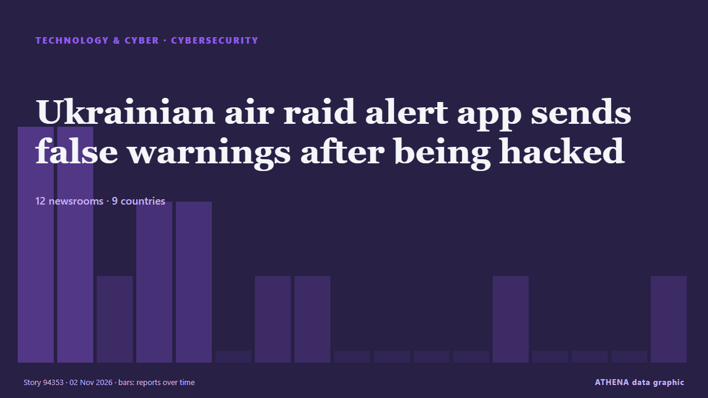

Ukrainian air raid alert app sends false warnings after being hacked

The app has sent Ukrainians false warnings that some areas of the country face nuclear and chemical threats. from ABC News Australia
Reported independently by 13 outlets in 10 countries since 1 Nov, first by Kyiv Independent; coverage is at its peak. ATHENA rates the risk elevated (5.9/10), driven mainly by the severity of the harm described and its geographic and sector reach. Confidence is 86% (high), with 13 independent outlets corroborating it and an average source reliability of 76%. Newsrooms by country: United Kingdom (3), Australia (3), Ukraine (2). Coverage: 1 Nov to 2 Nov, 26 hours.
Why it matters: Russia's full-scale invasion of Ukraine began in February 2022. This tracker follows the fighting, strikes on infrastructure and the diplomacy around the war, as covered by newsrooms around the world.
What changed: 11 new reports from 11 newsrooms in the 24 hours to 2 Nov.
First reported as: Ukraine's air raid alert system hacked, Air Force says as false nuclear, chemical warnings sound
At a glance
Selected, scored and written by ATHENA's published methodology. No editor intervenes in individual events. How this is produced ›
| 01 Nov 21:29 UTC | 3 |
|---|---|
| 01 Nov 22:29 UTC | 3 |
| 01 Nov 23:29 UTC | 1 |
| 02 Nov 00:29 UTC | 2 |
| 02 Nov 01:29 UTC | 2 |
| 02 Nov 02:29 UTC | 0 |
| 02 Nov 03:29 UTC | 1 |
| 02 Nov 04:29 UTC | 1 |
| 02 Nov 05:29 UTC | 0 |
| 02 Nov 06:29 UTC | 0 |
| 02 Nov 07:29 UTC | 0 |
| 02 Nov 08:29 UTC | 0 |
| 02 Nov 09:29 UTC | 1 |
| 02 Nov 10:29 UTC | 0 |
| 02 Nov 11:29 UTC | 0 |
| 02 Nov 12:29 UTC | 0 |
| 02 Nov 13:29 UTC | 1 |
| 02 Nov 14:29 UTC | 0 |
| 02 Nov 15:29 UTC | 0 |
| 02 Nov 16:29 UTC | 0 |
| 02 Nov 17:29 UTC | 0 |
| 02 Nov 18:29 UTC | 0 |
| 02 Nov 19:29 UTC | 0 |
| 02 Nov 20:29 UTC | 0 |
| 02 Nov 21:29 UTC | 0 |
| 02 Nov 22:29 UTC | 2 |
| 01 Nov 21:52 UTC | 4.6 |
|---|---|
| 01 Nov 22:43 UTC | 5.2 |
| 02 Nov 23:06 UTC | 5.9 |
Why these numbers
Importance
Risk
Confidence
The reporting — who reported it, and when
headline as published · opens the original- Kyiv Independent · UkraineUkraine's air raid alert system hacked, Russian system targeted hours later
- Arab News · Saudi ArabiaCyberattacks trigger false emergency alerts in Ukraine and Russia
- BBC News · United KingdomFake nuclear warnings issued after Ukrainian and Russian air alert apps hacked
- The Straits Times · SingaporeUkraine and Russia say emergency alert apps were hit by hacks
- The Straits Times · SingaporeHackers hit Ukraine and Russia's emergency apps, send fake nuclear alerts
- APA (English) · AzerbaijanUkrainian air force says public air raid alert app sent erroneous alerts after being hacked
- Fox News (World) · United StatesUkraine says air alert system hacked after false radiation warning in Kyiv
- France 24 English · FranceRussia and Ukraine accuse each other of hacking emergency alert apps
- ABC News Australia · AustraliaUkrainian air raid alert app sends false warnings after being hacked
- SBS News · AustraliaUkraine security app hacked as longest-running truce with Russia ends
- Sydney Morning Herald · Australia‘Stay calm’: Ukraine says public air raid alert app sent false alerts after being hacked
- The Independent · United KingdomUkraine-Russia war latest: 26 killed in ‘horrific’ Russian attack on Ukrainian aid centre
- Al Jazeera English · QatarNuclear radiation in Russia, Ukraine? No, just hacked warning alerts
- BBC News · United KingdomWhat we know about the alert app hack in Ukraine and Russia
- Novinite · BulgariaFalse Nuclear Warnings Trigger Panic as Ukraine and Russia Report Cyberattacks
- Kyiv Independent · UkraineZelensky confirms Ukraine targeted Russian emergency alert systems in retaliatory hack